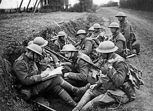

In the beginning, the Austrian Archduke, Franz Ferdinand, was assassinated on June 28, 1914. He was shot twice by a member of a Serbian extremeist group, which then led to war in August of the same year

Next, Germany violets of the Belgian Neutrality and Britain fears of German domination of Europe. So Britain enters the war against Germany
Continue Here.